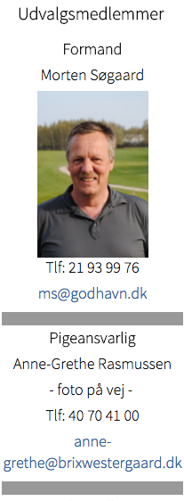
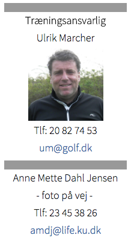

<div class="pages">
  <div data-page="juniorer" class="page navbar-fixed toolbar-fixed" >
    <div class="navbar">
      <div class="navbar-inner">
        <div class="left">
          <a href="#" class="link back icon-only"><i class="icon icon-back"></i></a>
          <!-- <a href="#" class="back link icon-only"><i class="icon icon-back"></i></a> -->
        </div>
        <div class="center">Juniorudvalget</div>
        <!-- <div class="right"></div> -->
        <div class="right">
        </div>
      </div>
    </div>
    <div class="page-content" style="padding-top:45px;">
       <div class="content-block">
          <p>Hornbæk Golfklub har en meget aktiv juniorafdeling med en lang række forskellige aktiviteter.
           <br /><br />
          Ideer og ønsker til forbedringer, tilføjelser m.m. til juniorsiderne modtages gerne og kan sendes til Morten Søgaard ms@godhavn.dk<br /><br />
          Da vi anvender links til eksterne hjemmesider kan det være, at nogle af disse pludselig ikke virker. Støder du på noget sådan, må du gerne skrive til sekretariat@hornbaekgolf.dk om dette og med anførsel af, hvor det ikke funktionsdygtige link befinder sig på Hornbæk Golfklubs Juniorsider.
          <br /><br /> 
          Juniorudvalget består af frivillige der er knyttet til Hornbæk Golfklub dels som medlem og dels forældre med barn der er medlem af klubben.
          <br /><br /> 
          Juniorudvalget er ansvarlig for:
           <br /><br />
          - kommer snart -
          <br /><br /> 
          Seneste referat - <a href="http://hornbaekgolf.dk/images/Referat_junior_m%C3%83de_HBG_den_15-1-2015.pdf" class="external" download>download her</a></p>
          <br />
          <br />
          
        </div>
    </div>
    </div>
    </div>
  </div>
</div>
